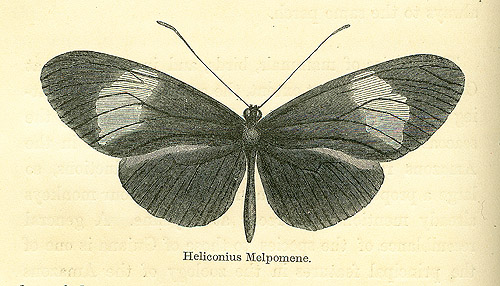
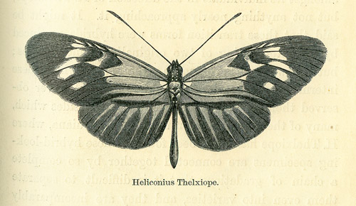
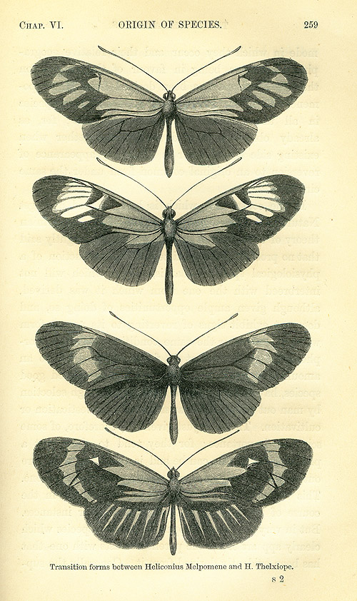

The Naturalist on the River Amazons, a Record of Adventures, Habits of Animals, Sketches of Brazilian and Indian Life, and Aspects of Nature under the Equator, during Eleven Years of Travel.
(These two volumes are now available online at the Library of Congress' Rare Books and Special Collections Division, http://www.loc.gov/rr/rarebook/guide/ra041001.html . A version of the second, one volume, popular edition is available from Project Gutenberg).
Vol I.
Chapter VI. The Lower Amazons - Pará
to Obydos
...
[Final section in chapter]
- Origin of Species by Segregation of Local Varieties.
p. 255
The species of mammals, birds, and insects found at Obydos are, to a great extent, the same as those inhabiting the well-explored tract of country lying along the seacoast of Guiana. No other locality visited in the Amazons region supplied, among its productions, so large a proportion of Guiana forms. The four monkeys already mentioned all recur at Cayenne. A general resemblance of the species to those of Guiana is one of the principal features in the zoology of the Amazons valley; but in the low lands a great number exist only in the form of strongly modified varieties; indeed, many of them are so much transformed that they pass for distinct species; and so they truly are, according to the received definitions of species. In the somewhat drier district of Obydos, the forms are more constant to their Guiana types. We seem to obtain here a glimpse of the manufacture of new species in nature. The way in which these modifications occur merits a few remarks. I will therefore give an account of one very instructive case which presented itself in this neighbourhood.
p. 256:
The case was furnished by certain kinds of handsome butterflies belonging to
the genus Heliconius,(1) a group peculiar to
tropical America, abounding in individuals everywhere in the shades of its luxuriant
forests, and presenting clusters of varieties and closely allied species, as
well as many distinct, better marked forms. The closely allied species and varieties
are a great puzzle to classifiers; in fact, the group is one of those wherein
great changes seem to be now going on.
A conspicuous
member of the group is H. Melpomene of Linnaeus. This elegant form is found
throughout Guiana, Venezuela, and some parts of New Granada. It is very common
at Obydos, and reappears on the south side of the river in the dry forests behind
Santarem, at the mouth of the Tapajos. In all other parts of the Amazon valley,
east- [p. 257:] ward to Pará and westward to Peru, it is entirely absent.
This absence at first appeared to me very strange; for the local conditions
of these regions did not appear so strongly contrasted as to check, in this
abrupt manner, the range of so prolific a species; especially as at Obydos and
Santarem it occurred in moist woods close to the edge of the river. Another
and nearly allied species, however, takes its place in the forest plains; namely
the H. Thelxiope of Hübner. It is of the same size and shape as its sister
kind, but differs very strikingly in colours: H. Melpomene being simply black
with a large crimson spot on its wings, whilst H. Thelxiope has these beautifully
rayed with black and crimson, and is further adorned with a number of bright
yellow spots. Both have the same habits. H. Melpomene ornaments the sandy valleys
in the forests of Obydos, floating lazily in great numbers over the lower trees;
whilst H. Thelxiope, in a similar manner and in equal numbers, adorns the moister
forest which constitute its domain. No one [p. 258:] who has studied the group
has doubted for a moment that the two are perfectly and originally distinct
species, like the hare and rabbit, for instance, or any other two allied species
of one and the same genus. The following facts, however, led me to conclude
that the one is simply a modification of the other. There are, as might be supposed,
districts of forest intermediate in character between the drier areas of Obydos,
&c., and the moister tracts which compose the rest of the immense river
valley. At two places in these intermediate districts, namely, Serpa, 180 miles
west of Obydos, on the same side of the river, and Aveyros, on the lower Tapajos,
most of the individuals of these Heliconii which occurred were transition forms
between the two species. Already,
at Obydos, H. Melpomene showed some slight variation amongst its individuals
in the direction of H. Thelxiope, but not anything nearly approaching it. It
might be said that these transition forms were hybrids, produced by the intercrossing
of two originally distinct species; but the two come into contact in several
places where these intermediate examples are unknown, and I never observed them
to pair with each other. Besides which, many of them occur also on the coast
of Guiana, where H. Thelxiope has never been found. These hybrid-looking specimens
are connected together by so complete a chain of gradations that it is difficult
to separate them even into varieties, and they are incomparably more rare than
the two extreme forms. They link together gradually the wide interval between
the two species. One is driven to conclude, from these facts, that the two were
originally one and the same: the [p. 259 is just the figure (below); p. 260]
mode in which they occur and their relative geographical positions being in
favour of the supposition that H. Thelxiope has been derived from H. Melpomene.
Both are nevertheless good and true species in all the essential characters
of species; for, as already observed, they do not pair together when existing
side by side, nor is their any appearance of reversion to an original common
form under the same circumstances.
In the controversy
which is being waged among Naturalists, since the publication of the Darwinian
theory of the origin of species, it has been rightly said that no proof at present
existed of the production of a physiological species, - that is, a form which
will not interbreed with the one from which it was derived, although given ample
opportunities of doing so, and does not exhibit signs of reverting to its parent
form when placed under the same conditions with it. Morphological species, -
that is, forms which differ by an amount that would justify their being considered
good species, have been produced in plenty through selection by man out of variations
arising under domestication or cultivation. The facts just given are, therefore,
of some scientific importance; for they tend to show that a physiological species
can be and is produced in nature out of the varieties of a pre-existing closely
allied one. This is not an isolated case; for I observed, in the course of my
travels, a number of similar instances. But in the very few has it happened
that the species which clearly appears to be the parent coexists with one that
has been evidently derived from it. Generally the sup- [p. 261:] posed parent
seems to have been modified, and then the demonstration is not so clear, for
some of the links in the chain of being are wanting. The process of origination
of a species in nature, as it takes place successively, must be ever beyond
man's power to trace, on account of the great lapse of time it requires. But
we can obtain a fair view of it by tracing a variable and far-spreading species
over the wide area of its present distribution; and a long observation of such
will lead to the conclusion that new species in all cases must have arisen out
of variable and widely-disseminated forms. It sometimes happens, as in the present
instance, that we find in one locality a species under a certain form which
is constant to all the individuals concerned; in another exhibiting numerous
varieties; and in a third presenting itself as a constant form, quite distinct
from the one we set out with. If we meet with any two of these modifications
living side by side, and maintaining their distinctive characters under such
circumstances, the proof of the natural origination of a species is complete:
it could not be much more so were we able to watch the process step by step.
It might be objected that the difference between our two species is but slight,
and that by classing them as varieties nothing further would be proved by them.
But the differences between them are such as obtain between allied species generally.
Large genera are composed, in great part, of such species; and it is interesting
to show how the great and beautiful diversity within a large genus is brought
about by the working of laws within our comprehension.
p. 262:
A few remarks on the way races are produced will be here in place. Naturalists have been generally inclined to attribute the formation of local varieties or races of a species to the direct action of physical conditions on individuals belonging to it which have migrated into new localities. It might be said, therefore, that our Heliconius Thelxiope of the moist forests had resulted from operation of the local conditions on H. Melpomene, especially as intermediate varieties are found in districts of intermediate character and position.
It is true that external agencies - such as food and climate, causing delayed or quickened growth, - have great effect on insects, acting on their adolescent states, and so by correlation of growth on the shape and colours of the adult forms.(2) But there is no proof that a complete local variety or race has been produce wholly by this means, modifications acquired by individuals not being generally transmissible to offspring. The examination of these races or closely allied species of Heliconii, with reference to their geographical distribution, throws light also on this subject. Thus Heliconius Thelxiope is disseminated over a district 2000 miles in length from east to west, from the mouth of the Amazons to the eastern slopes of the Andes, but shows no remarkable modification throughout all that area; some slight variations only occurring at extreme points of it. If local conditions [p. 263:] acting directly on individuals had originally produced this race or species, they certainly would have caused much modification of it in different parts of this region; for the upper Amazons country differs greatly from the district near the Atlantic in climate, sequence of seasons, soil, forest clothing, periodical inundations, and so forth. These differences moreover graduate away so that the species is subjected to a great diversity of physical conditions from locality to locality, and ought in consequence to present an endless series of local varieties, on the view mentioned, instead of one constant form throughout. Besides, how should we explain the fact of H. Thelxiope and H. Melpomene both existing under the same local conditions; and how account for the diversified modifications presented in one and the same locality as at Serpa and on the Tapajos?(3)
There is evidently therefore some more subtle agency at work in the segregation of a race than the direct operation of external conditions. The principle of natural selection, as lately propounded by Darwin, seems to offer an intelligible explanation of the facts. According to this theory, the variable state of the species exhibited in the districts above mentioned would be owing to Heliconius Melpomene having been rendered vaguely instable by the indirect action of local conditions dis- [p. 264:] similar to those where it exists under a constant normal form. In these districts selection has not operated, or it is suitable to the conditions of life there prevailing, that species should exist under an instable form. But in the adjoining moister forests, as the result shows, the local conditions were originally more favourable to one of these varieties than to the others. The selected one, therefore, increased more rapidly than its relatives; and the fact of the entire absence of these latter from an area whence they are now separated by only a few miles, points to the conclusion that they could not maintain their ground. Those individuals of successive broods which were still better suited to the new conditions would for the same reasons be preferred over their relatives; and this process going forward for a few generations, the extreme form of H. Thelxiope would be reached. At this point the race became well adapted to the new area, which we may suppose to have been at that epoch in process of formation as the river plains became dry land, at the last geological changes in the level of the country. In the higher and drier areas of Guiana and the neighbouring countries, H. Melpomene has been the selected form; in the lower and more humid regions of the Amazons, H. Thelxiope has been preferred. An existing proof of this perfect adaptation is shown in the swarming abundance of the species; the derivation of H. Thelxiope from H. Melpomene is made extremely probable by the existence of a complete set of connecting links; and lastly, its permanent establishment is made evident by its refusal to intercross with its parent form, or revert [265:] to its former shape when brought by natural redistribution into contact with it.(4)
1. This genus has long been known under the name of Heliconia: a most inconvenient term, as a botanical genus bears the same name. An author has lately proposed to revert to the masculine termination of the words as first employed by Linnaeus (Felder, in the "Wiener Entomologische Monatschrift," March, 1862), and, as I think the correction a good one, I adopt it.
2. M. Bellier de la Chavignerie, in the "Annales de la Société Entomologique de France, 1858," p. 299, relates experiments to the effect of retardation of the pupa development through exposure to unusual cold, showing that striking varieties of adult insects are producible by this means.
3. As the action of external influences would be on the early states of the insects and not on the adults, it is well to mention that the broods of the Heliconii appear to be social; the larvae feeding together and undergoing their last transformation on the same tree. This I observed with regard to the H. Erato, a species closely allied to H. Thelxiope.
4. If this explanation of the derivation of Heliconius Thelxiope be true, the origination by natural process of a host of now distinct allied species in this genus, as well as, in fact, all other genera containing numerous closely related species, will have to be admitted. A species allied to H. Thelxiope, namely H. Vesta, seems to have been derived also from H. Melpomene, for amongst the numerous varieties already mentioned are many examples of intermediate between the two. There is this difference, however, between H. Thelxiope and H. Vesta: the former is confined in its range to the Amazons valley, whilst H. Vesta extends beyond this region over Guiana and the central valleys of the Andes; it seems, therefore, to have acquired a power of adaptation to a much wider diversity of local conditions. Insects seem to be well adapted to furnish data in illustration of this interesting and difficult subject. This arises chiefly from the ease with which ample suites of specimens can be obtained for comparison from many points in the areas of distribution, both of species and of varieties. It is scarcely necessary to add that the conclusions thus arrived at will apply to all organic beings.